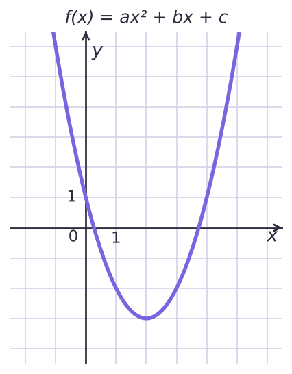
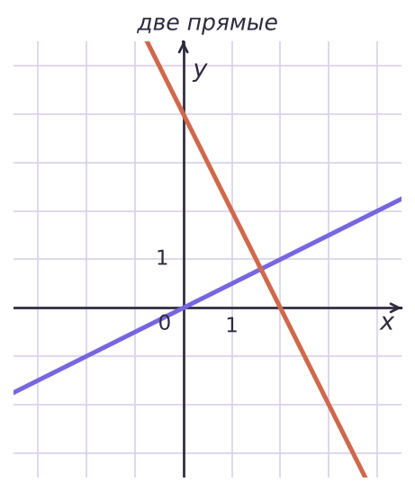
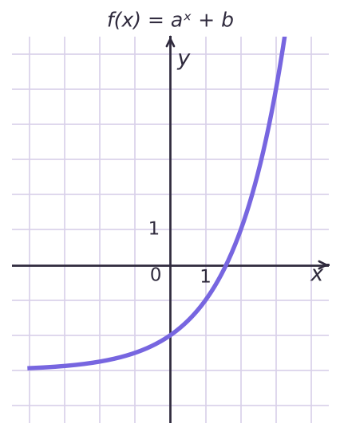
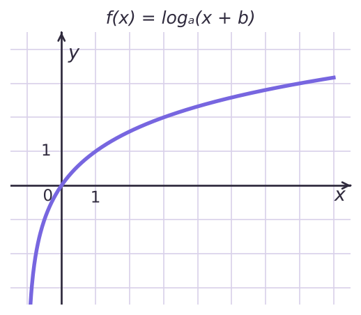
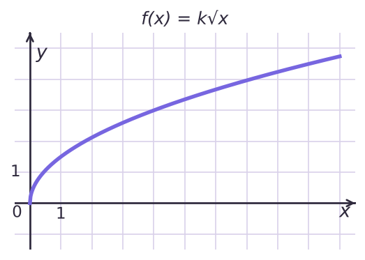
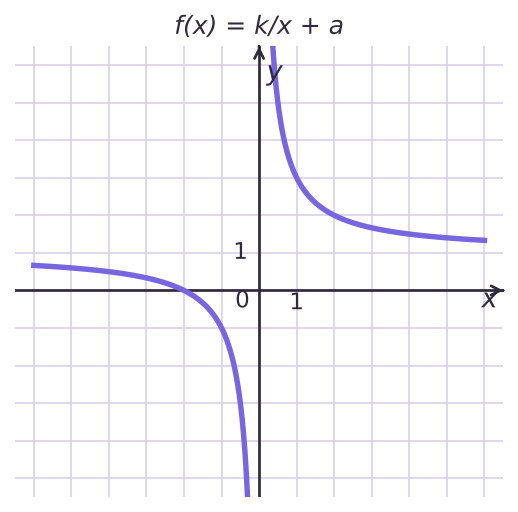

Коэффициенты по точкам
| Функция | Подсказка |
|---|---|
| kx + b | b — на оси Oy |
| ax² + bx + c | c = f(0), вершина |
| k/x + a | асимптота y = a |
| aˣ + b | асимптота y = b |
| logₐ(x + b) | асимптота x = −b |
(0; 1), (1; −2), (2; −3) ⇒ x² − 4x + 1
f(7) = 22

y = 0,5x и y = −2x + 4
x = 1,6; y = 0,8 — за сеткой, только из формул


На рисунке изображён график функции f(x) = aˣ + b. Найдите f(5).
На рисунке изображён график функции f(x) = logₐ(x + b). Найдите f(31).
На рисунке изображён график функции f(x) = k√x. Найдите f(25).
На рисунке изображён график функции f(x) = k/x + a. Найдите, при каком x значение f(x) = 0,5.И шесть графиков в тетради